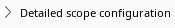
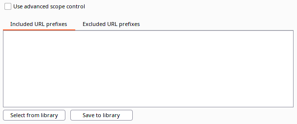

Scope Configuration
Configurration: What not to Scan
Scan Details → Detailed Scope Configuration
Scoping can keep the scan on track. Also allows for explicitly setting a more narrow scope for focused scanning

